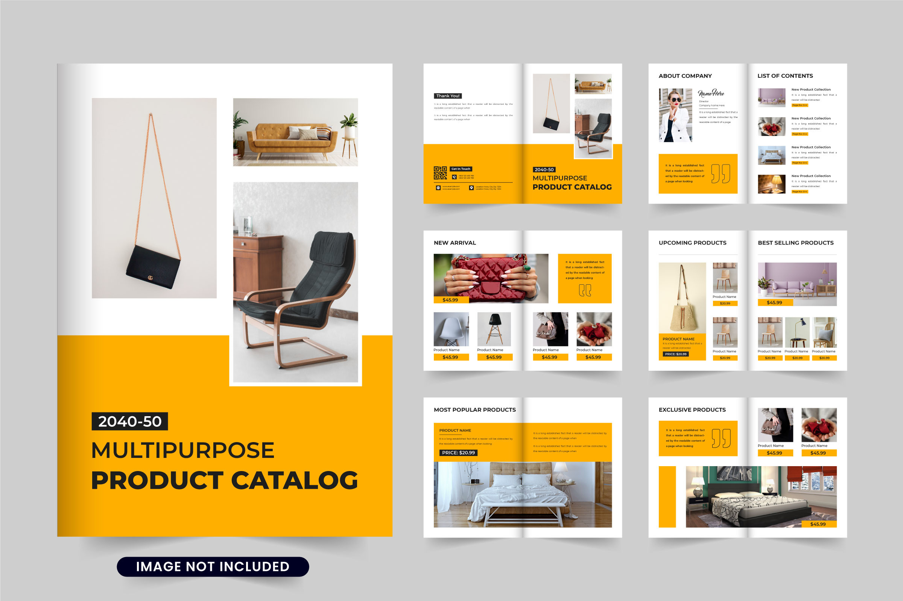
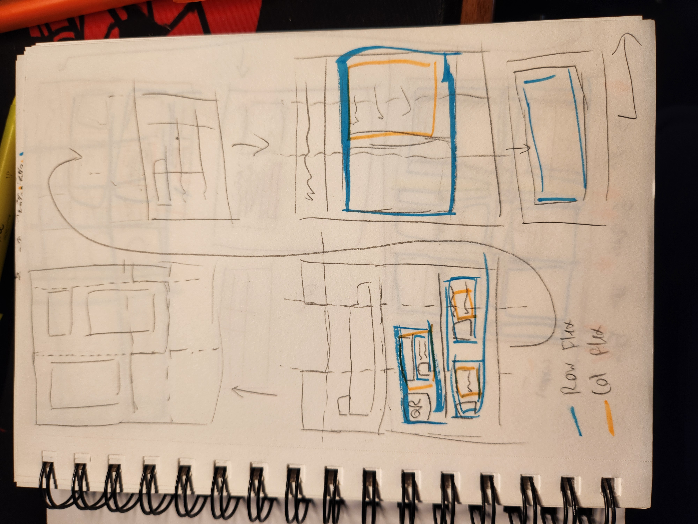
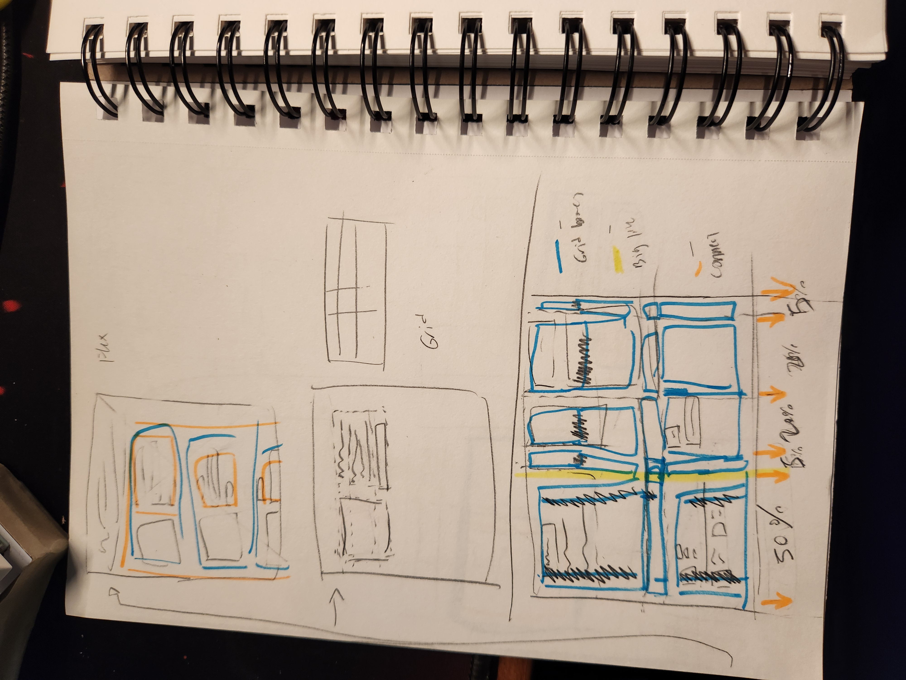
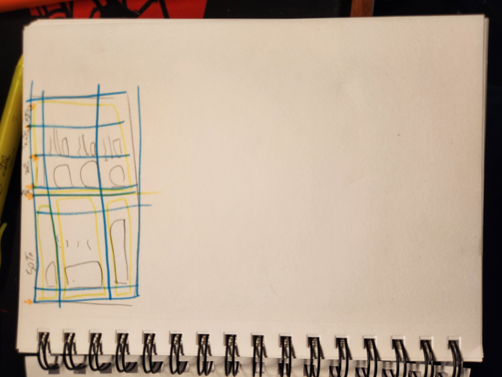

Link to page
Original
Sketches
  Resources
Images from placeholderimage.dev
So much help obtained from MDN Docs and StackOverflow.
Especially this StackOverflow Post.
Goals
I want to turn this to a portfolio site to display my past works, and so I moved the contact info
block to further up the page on the mobile responsive version.
Tough Parts
One of the hardest parts to do so far were deciding on how to get the landing images to overlap with the
yellow bar. I initally tried making the image actually go over the bar, but decided to "fake" to the
look by adding more bar around the image using css-grid.
Another tough part was working with flexbox and manipulating the sizes of the images to ensure the
elements don't stretch beyond the images.